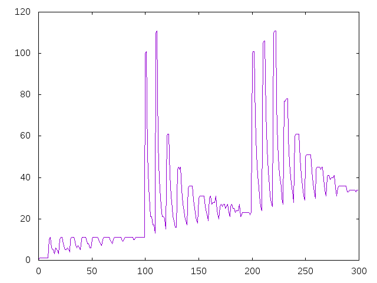

Números como suma de sus dígitos
El número 23 se puede escribir de 4 formas como suma de sus dígitos
2 + 2 + 2 + 2 + 2 + 2 + 2 + 2 + 2 + 2 + 3 2 + 2 + 2 + 2 + 2 + 2 + 2 + 3 + 3 + 3 2 + 2 + 2 + 2 + 3 + 3 + 3 + 3 + 3 2 + 3 + 3 + 3 + 3 + 3 + 3 + 3
La de menor número de sumando es la última, que tiene 8 sumandos.
Definir las funciones
minimoSumandosDigitos :: Integer -> Integer graficaMinimoSumandosDigitos :: Integer -> IO ()
tales que
- (minimoSumandosDigitos n) es el menor número de dígitos de n cuya suma es n. Por ejemplo,
minimoSumandosDigitos 23 == 8 minimoSumandosDigitos 232 == 78 minimoSumandosDigitos 2323 == 775
- (graficaMinimoSumandosDigitos n) dibuja la gráfica de (minimoSumandosDigitos k) par los k primeros números naturales. Por ejemplo, (graficaMinimoSumandosDigitos 300) dibuja
